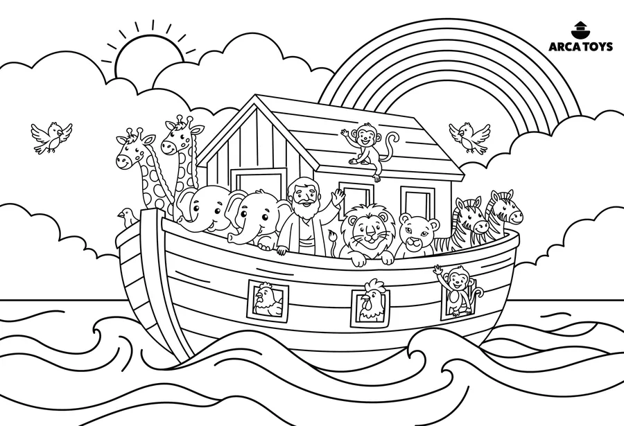

Protótipo Arca Toys · quebra-cabeça para colorir
A câmera reconhece o quebra-cabeça e monta a arca de Noé em 3D com as cores que você pintou.

A imagem da câmera é usada só neste aparelho para ler as cores. Nenhuma foto é enviada ou guardada.
O quebra-cabeça é deitado: segure o celular deitado, assim ele cabe inteiro na tela e a leitura fica melhor.